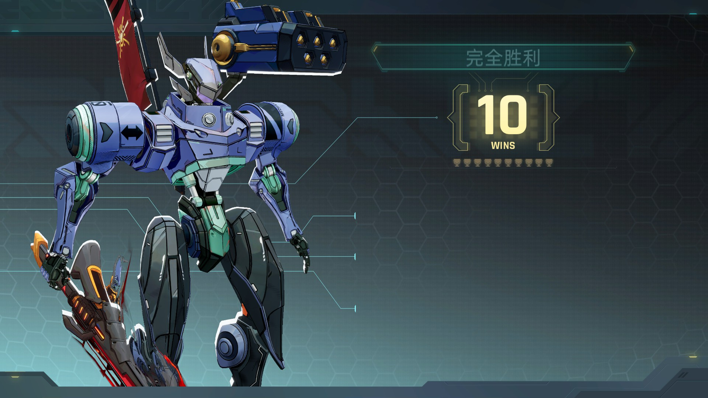
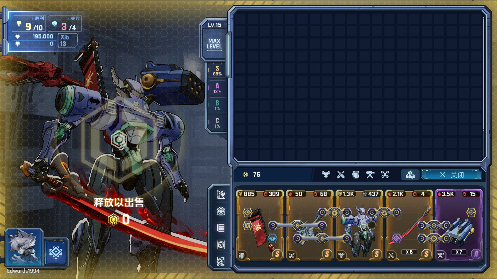

第二局挑战赛阶段 · 10胜3负
后续已继续爬塔，最终第16天12胜4负。打开第14—16天爬塔、终局与模型修正。以下保留前13天阶段记录。
2026年11月15日晚开始，11月16日00:11完成。机师莫瑟，第13天拿到第10胜，已进入「完全胜利 / 10 WINS」阶段结算，后续可继续爬塔。最后配置Lv.15、195,000生命；战前75金币。本局修正 · 最终装配 · 末战统计

这一局改变了什么
用户指出共享配件只给一件装备收益、S刀在边缘浪费左孔。这改变了装配的评估单位：先看整排连接，再看单件强化。刀移至内侧后，左边连接衣服，右边同时与肩炮共享伤害和攻击段数。高品质优先只是起点，属性匹配、触发频率和两个端点的总收益决定实际去向。
| 决策 | 实际证据 | 下次保留的规则 |
|---|---|---|
| 整排重新排序 | 第8天接通多件配件，第11天刀6段、肩炮7段；肩炮统计96,000，成为当日第一输出。 | 每次换装先检查左右插槽、连接线和两件属性；拆下一条桥时计入另一端损失。 |
| 力量—坚固—加速 | 第8天两个互相触发科技分别提供180力量、138坚固；第12天换入获得坚固时给装备加速的衣服。 | 画清触发方向、概率与启动来源。概率连锁有收益，但未验证无限循环或精确加速时长。 |
| 伤害高仍可能输 | 第12天刀与肩炮合计292,544伤害，对方背部单件供盾220,899，仍然落败。 | 选敌同时估护盾、治疗、最大生命削减与成长速度；失败先查三页战报。 |
| 给输出补续航 | 第13天力量吸血无人机贡献24,393治疗，战斗结束回到满生命。 | 输出已足时比较吸血、减伤、控制和提前击杀的收益；此场不能作为单变量因果证明。 |
| 经济与库存 | 金币提示为每满5得1利息、最多10；第12天63金币实收10。第13天旧装备与配件售出，仓库清空。 | 先盘库存和可合成同款，再比较升级、购物、留息；末战不为下一天留息，本次余75金币是未继续找到合适提升的余额。 |
胜负路径：胜、胜、胜、负、胜、负、胜、胜、胜、胜、胜、负、胜。首局6胜4负→本局10胜3负；两局对手、商店与奖励不同，不能据此算出某条策略提升了多少胜率。
独立问题继续保存在各自报告：BUG-001 对手详情旧名、BUG-003 出售提示残留均补入本局原图。统计底部×N口径未确认，拖放失败也存在定位与滚动因素，未新增为已确认Bug。
开始前的判断
高品质装备先读主动、被动与兼容配件，排卡时优先建立能反复触发的组合。每次购物同时比较升级、当场换装、出售库存与留息。选敌要找伤害成长来源、最早启动时间、护盾和治疗循环。每场先写一个可验证预测，结算时核对伤害、防御、增益三页。
上局第四负来自护盾转伤手武，本局遇到类似词条会追查供盾来源与攻击段数。利息先按玩家给出的每 10 金币得 1、最多 5 记录，再用本局提示和结算校准。
第 1 天 · 起手
选莫瑟，确认零胜负、Lv.1、1,500 生命、0 金币。初始三件 C 级躯干都没有被动，选冷却 11 秒、450 护盾、30 力量的躯干。武器选随机与 3 金币，拿到四段燃烧手武。初始属性尚未形成协同，购物阶段根据实际货品调整。新局起点 · 躯干说明 · 随机武器


第 1 天 · 商店与战前预测
金币悬停说明明确每满 5 金币结算 1 利息，上限 10，与首局实收一致。买 2 金币特价力量手武、4 金币背部，花 12 金币经验升四级至 7,500 生命。购肩武后发现事件奖励的力量肩武已在仓库，换上它，卖出两件闲置武器收回 4 金币，战前余额 10。新肩武原已持有，先盘库存可以避免这次 2 金币转卖差价。
对手 4,500 生命，四件装备，B 手武给雷电多触发一次，C 肩武施加寒冷。预期我方生命和力量武器占优，但寒冷可能拖慢攻击。保留首个对手。利息原文 · 配置与余额 · 对手 · 敌方被动


第 1 天 · 胜，累计 1 胜 0 负
手武 3,366、肩武 1,964，战前主要输出判断成立。10 金币结算利息 2，收入 25，总收入 27。保留 37 金币进入次日。结算 · 伤害明细


第 2 天 · 从对方被动决定重掷
选择加速脉冲，每 3 秒给随机装备加速 2 秒。总计花 24 金币经验升六级，生命 20,000。特价回复件 12 金币买入后发现现有单槽无法横接，按相同售价卖回。刷新一次，出现 16 金币 A 级力量手武，锁店留到下一天，余额 11。
初始对手只有 7,500 生命，却有开局 150 感电、每层感电额外伤害、每台无人机多 16 雷电伤害的组合。为避开持续增幅用一次免费重掷，换到 12,500 生命、三件 C 装的 Brewchino。预测己方两武器加力量的持续伤害优于敌方，观察加速次数。科技 · 锁店商品 · 感电肩武 · 无人机 · 保留的对手


第 2 天 · 胜，累计 2 胜 0 负
最佳输出手武 8,886，力量汇总 166 = 躯干 90 + 肩武 56 + 手武 20。11 金币产生 2 利息，收入 28，次日预算 41。战中出现加速图标，统计中的科技卡未给出可直接解释的加速次数，暂不能从该卡底部 ×1 推断实际只触发了一次。结算 · 伤害 · 增益来源


第 3 天 · 力量与成长开始配合
工程师把躯干 C → B，护盾 550 → 660，力量 30 → 44，被动让力量额外提供伤害。锁店保留了三件装备，特价位置变化，A 级力量手武以 8 金币购入。再花 8 金币买「使用时主属性 +20%」的单格件，装在最高品质的手武上。花 16 金币升七级，30,000 生命，旧手武售出 2，战前余额 11。
第一名对手寒冷背部每次把寒冷层数加 25%，肩武每击再加 6%；第二名对手寄生躯干产盾、无人机每台每秒回复 1% 最大生命。分别用免费重掷避开，最后对手 Restart 同为 30,000 生命，只有三件 C 装。预期手武在加速和成长件作用下贡献最大输出。躯干被动 · 锁店验证 · 成长件已装 · 寒冷成长 · 回复 · 最终对手


第 3 天 · 胜，累计 3 胜 0 负
倒计时 16 秒时对手归零，己方仍有 29,936 生命和 380 护盾。手武卡面从 355 成长到约 3.4K，既有力量又有配件加成，无法单独归因。手武统计 27,329、肩武 12,595；最佳输出与明细相同。保留成长件。战斗结束帧 · 结算 · 伤害


第 4 天 · 把力量转成防御
随机 B 科技「要塞 II」加 20 金币，获得力量时有 50% 几率再得 3 坚固。花 20 金币升八级到 42,000 生命。各花 16 金币买 A 坚固躯干、A 坚固无人机。前者让坚固每秒提供护盾，后者每台使防御装备护盾 +16%。4 金币买跨卡主属性 +25%，交换手武与躯干后下排连通，手武 405 → 507、躯干 945 → 约 1.2K，成长件另放手武左上。旧躯干卖 4，余额 12。
重掷力量不断成长的 S 手武组合、SS 背部强化坚固并联动寒冷和感电的组合。最终对手有 S 寄生背部，寄生超过 250 时会消耗一半把减速转为禁用；A 手武使寄生削减最大生命。预期供盾增强，风险是被禁用影响输出。科技 · 躯干 · 无人机 · 连槽后 · 敌方 · 禁用条件 · 削减生命


第 4 天 · 负，累计 3 胜 1 负
坚固汇总 351 = 躯干 189 + 无人机 126 + 科技 36。状态贡献 16,126 护盾，躯干本体 3,546、背部 1,750，说明供盾确实发生。手武仅 21,570，肩武 4,064，对方治疗来源为 15,275、9,159 和 160，另有护盾与最大生命削减，最终落败。换装同时减少力量来源，且敌方带减速和禁用，后续优先补能更快施加力量的肩武或短冷却部件。战中 · 结算 · 伤害 · 回复和护盾 · 坚固来源


第 5 天 · 补力量供给与条件配件
工程师把力量肩武 C → B，卡面力量 7 → 11，每次冷却结束又增加 20 力量。花 24 金币升九级到 56,000 生命。8 金币的坚固增幅件替换小增幅，手武从 569 到 683，躯干从约 1.2K 到 2.5K。旧配件仍在仓库，出售尝试未到账，战前余额 16。
避开按最大生命额外造成燃烧伤害的手武，再避开失盾转伤手武与持续增加坚固的背部。最终对手为 30,000 生命的感电组合。预测力量肩武的成长能增加主力武器收益，但需要检查感电是否先击穿防御。肩武被动 · 条件增幅 · 燃烧威胁 · 失盾转伤 · 供盾来源 · 最终对手


第 5 天 · 胜，累计 4 胜 1 负
战斗结束时仍有 30,348 生命、2,834 护盾。肩武卡面力量成长至 51。统计力量 373 = 肩武 328 + 手武 45；手武最佳输出 28,522。16 金币产生 3 利息。供给力量的升级得到支持，保留构筑。战斗 · 结算 · 伤害 · 力量来源


第6天：全部五件装备都有配件
4胜1负出发，选择开局300力量科技；投入28金币升至10级，生命72,000。购买A坚固背部16金币替换C燃烧背部并回收2金币；旧25%主属性桥接移至背部与肩炮。刷新一次后购买8金币B坚固元素配件，装入A无人机自身两侧插槽，坚固7→11。剩4金币。
检验链路：开局力量＋肩炮/手部获得力量→要塞II获得坚固→衣服提供护盾、背部增加最大生命。无人机增加防御装备护盾。对手56,000生命，A力量背部每次使用给所有力量装备+10力量，B科技把伤害6%转为护盾，有明显成长协同；我方依靠高基础生命、开局力量与集中强化武器争取早期优势。


第6天结果：4胜2负
高估了开局力量与血量，低估敌方全力量体系的持续成长。结算敌方肩炮面板23,800，我方约2,100；敌方两张主输出统计标注50,150和27,873，我方23,660和7,544。防御统计页的数字与次数口径仍需核对，不能直接把卡片大数字当累计量；保留全部统计截图作为待验证证据。收入40，无利息。


第7天：用力量倍率替换慢速防御成长
工程师免费把手部升S级；升级退回全部相关配件，重新安装成长件与A主属性桥接。购买A力量背部16金币（造成伤害时，获得等于自身力量层数的护盾；第8天重新核对，纠正此前误读）与折扣A肩炮8金币（每层力量额外增加4点伤害），使开局300力量转为输出。A坚固背部售出8金币；旧B肩炮多次拖拽未卖出，仍在仓库，余额28，未把它算作收入。
保留衣服、坚固无人机和它们的配件。免费重掷避开SS燃烧肩炮6倍燃烧层数伤害＋SS衣服每1.2秒额外燃烧的组合，选择30,000生命、寄生与燃烧混合的Myung。战斗倒计时31秒时取胜，我方39,841生命、876护盾。


第7天结果：5胜2负
手部伤害22,703，新肩炮15,789；最佳防御5,015。伤害页面大数字与结算摘要一致。注意：卡片底部×32、×1、×16等尚未证实是释放次数，不据此推算总量。28金币结算5利息，加基础收入43，共48，次日余额76。


第8天：把整排装备当作连接问题
选择S科技「加固IV」：获得坚固时50%概率获得5力量，与B「要塞II」的力量→坚固互相触发。两者均为概率触发，不能称为无限循环。91,000生命、11级；现余额42，经验4/38。
用户指出可共享配件只覆盖单件、S刀在边缘浪费左侧插槽。最终排成：力量背部—坚固无人机—坚固衣服—S刀—力量肩炮。C长配件连接背部与无人机，互相充能0.5秒；B元素件连接无人机与衣服，两者都获得坚固专属54%增幅；A主属性件连接衣服与S刀；C主属性件连接S刀与肩炮；单格成长件仍在S刀。最终刀797、肩炮563、衣服坚固98、无人机坚固11。相比上一版刀683、衣服98、无人机7，同时改善三个节点。
操作经验：装备拖动是队列插入；长配件目标需要按左端插槽定位，每次必须看实际端点，不能只依据拖动目标猜结果。旧B肩炮终于出售，回收4金币。买6金币充能件，升级基础生命；不为了凑连接购买无用装备。另重新核实力量背部被动是伤害触发护盾，已更正第7天误读。


第8天结果：6胜2负
刀伤害99,247、肩炮58,173。力量950 = 初始科技300 + 背部240 + 新科技180 + 肩炮150 + 刀80；坚固来源为衣服196、要塞科技138、无人机132。互相触发的两个科技都有可见增益贡献，但统计不能区分由装备启动还是由另一个科技继续触发，不能据此证明无限循环。
背部供盾21,323、坚固供盾14,010、衣服5,725。对手背部供盾51,000，并有多种恢复来源，单看58,000生命显然低估耐久。42金币获得8利息，基础46，共54，次日96金币。


第9天：同款合成升级与双武器增伤
选择跳过首领、随机SS奖励，获得寄生手武；不符合现有力量体系，在商店售出32金币。花32金币升12级至112,000生命。S单格伤害+200%配件16金币装满S刀最后空槽；B单格护盾配件4金币装衣服。16金币买同款A无人机，自动合成S，原连接保留，坚固11→14。
刷新一次2金币，花32买S桥接伤害+200%（燃烧专属500%本构筑不适用），连接S刀与A肩炮；旧C主属性桥移至背部与无人机。刀约2,800、肩炮1,500，战前26金币。用掉高于利息上限的现金后仍继续投资输出，接受少5利息的代价。首个对手30,000生命，S感电手武会在雷电伤害时给所有感电装备+3感电，A肩炮让感电额外造成每层1雷电伤害；预计我方生命与双武器爆发能在其成长前取胜。
操作修正：拖拽前先悬停源物件并确认提示，再拖到目标插槽，成功率明显改善；之前失败的拖拽不自动记作游戏Bug。


第9天结果：7胜2负
刀36,003、肩炮19,083，快速结束战斗；力量399 = 初始300 + 背部48 + 肩炮30 + 刀16 + 新科技5。背部供盾2,640，衣服尚未贡献可见护盾，提示本场主要是提前爆发，而非防御循环拖赢。对方实际供盾21,886，不能用30,000生命直接当作所需总伤害。收入49+5利息=54，下一天80金币。
伤害明细 · 防御明细 · 增益明细第10天：持续力量与每秒主属性成长
选择SS「余热核心V」，每秒获得12力量。80金币起步；买16金币S元素成长单格件放力量背部（使用时元素之力+32%）；刷新2；买32金币S主属性成长桥（每秒+8%）连接衣服与刀，替换A固定增幅桥。A桥转给背部与S无人机，旧C桥售出2。保留112,000生命、12级，暂缓40金币升级，余额32。
这是有风险的取舍：衣服初始护盾约3,400→1,500，刀开局约3,100→2,800，换取战中增长。避开135,000生命、十段燃烧乘算和95,000生命、无人机叠加14%吸血的对手，最后对手mgt为91,000生命，SS感电肩炮命中时感电层数+30%，无人机部署按感电层数造成伤害，仍有强成长威胁。


第10天结果：8胜2负
刀55,744、肩炮50,010，背部供盾5,381、衣服2,889。力量720 = 初始300 + 持续力量科技168 + 背部112 + 肩炮60 + 加固科技60 + 刀20。战斗较短，已证实持续力量与输出有贡献；还不能单独证明新主属性成长桥优于被替换的固定桥。32金币利息6，基础52，共58；次日90金币。
伤害 · 防御 · 增益第11天：用经济换生存，用插槽换攻击段数
事件选择100金币确定收益，余额90→190。花136金币升至满级15，生命112,000→187,000，剩54。买16金币特价S桥，攻击段数+3。把刀的S单格伤害+200%移到肩炮右上空槽，释放刀右下插槽，与肩炮左下共同连接新桥。刀3段→6段，肩炮4段→7段；刀单击面板约3,000→1,800，肩炮1,800→3,000，需按总段数、力量获取和命中被动评估，不能只看单击数值。
战前余额38。避开带叠加吸血与首次致死回复60%生命的力量构筑；最终对手「即季剧」160,000生命，感电体系。预期双武器更多段数能加快击杀。


第11天结果：9胜2负
肩炮96,000成为第一输出，刀85,732；背部供盾9,464、衣服3,238、坚固882。对方伤害约150,133，升级后的187,000生命提供了生存余量；不能仅用此次结果精确反推未升级必败，因为战斗状态也会变化。力量762，段数调整后的力量获取与伤害均有可见贡献。38金币利息7，基础55，共62，次日100金币。
伤害 · 防御 · 增益第12天：让坚固继续触发加速
100金币起步。自选A奖励拿敌方增益-10%的长件留作对策，最终没有装入。购买S衣服32金币：获得坚固时，使随机装备加速2.5秒；购买折扣S长元素件24金币，元素之力+288%。替换A衣服后插槽布局不同，重新连接：S长元素件接背部右中与无人机右中；B坚固元素件接无人机右下与衣服左下；S每秒主属性成长桥改接衣服右上与刀左上；刀单格成长件移至左下。保留刀与肩炮的伤害桥、段数桥，以及肩炮右上单格增伤。
最终背部力量187、无人机坚固40、衣服坚固127；刀6段、肩炮7段。旧衣服、A固定增幅桥、C充能桥实际售出共19金币，余额63。未成功出售的奖励长件仍在仓库，未虚记其12金币收入。
选敌：避开SS武器按我方最大生命3%加燃烧伤害、并额外结算燃烧的组合；再避开1.5秒四段、按已损失护盾12%增伤的武器。最终「青一色」135,000生命，燃烧成长体系。预期靠多段攻击、持续力量与坚固触发加速尽快取胜。


第12天结果：9胜3负
刀180,904、肩炮111,640，输出很高但仍失败。对方背部护盾220,899，另有22,634与3,283护盾，远超开战135,000生命所暗示的耐久；其伤害约231,667。己方背部供盾15,685、衣服3,002，防御不足。结算统计给出了失败原因，不能因输出超预期就判为伤害统计Bug。
新衣服提供加速的精确累计时长并未在当前报表中清晰展示；不把视觉光效当作效果量。63金币获得满额10利息，加基础58共68，次日131金币。最后一条命，重点寻找输出倍率、控制或恢复的明确提升。


第13天：补足吸血，把共享增幅送到关键装备
最后一条命，131金币起步，事件选择100金币，升满级后本日不再买经验。同款A力量背部16金币自动合成S；购入S力量专属长件48金币、S坚固专属长件24金币、S使用时自身增益层数+16%短桥32金币。最终连接：力量背部—力量无人机共享力量+432%；无人机—坚固衣服共享坚固+432%（无人机获得普通144%）；每秒主属性+8%桥也接无人机与衣服；衣服—刀共享自身增益+16%；刀—肩炮继续共享伤害+200%及攻击段数+3。刀的左侧和右侧都有有效连接。
以32金币S力量无人机替换S坚固无人机：每台无人机提供14%吸血，用高输出补生存。出售旧无人机、替换下来的配件与未用奖励。购买手部冷却-7.5%消耗品8金币、无人机冷却-2秒消耗品8金币，确认后者冷却8秒→6秒；16金币最大生命消耗品增加8,000生命，达到195,000。另16金币负面状态削减件装入背部空槽。最终仓库清空、金币75，背部力量309、无人机力量68、衣服坚固437，刀6段、肩炮7段。
操作校准：仓库会被悬停用的小幅滚动带偏，需先归顶再重新定位；消耗品最终拖入实际黄色出售区域才生效。之前拖向机体中央的失败不能据此判为游戏Bug。
选敌先避开13段护盾转伤武器；保留91,000生命的hghghg117，感电手武会叠加燃烧、SS燃烧无人机每施加160层燃烧额外召唤，具备增长链。我方预期靠高段数力量输出和吸血，在其召唤积累前结束战斗。敌方无人机被动 · 无人机6秒冷却



最终装配与作用
| 顺序 | 装备 | 关键作用与连接 |
|---|---|---|
| 1 | S力量背部 | 造成伤害时按自身力量获得护盾；单格元素成长和负面层数削减，力量专属长件共享给无人机。 |
| 2 | S力量吸血无人机 | 每台14%吸血；6秒冷却。接力量432%、坚固件的普通144%，并与衣服共享每秒主属性+8%。 |
| 3 | S坚固衣服 | 坚固437，获得坚固时给随机装备加速2.5秒。接坚固432%，与刀共享使用时自身增益层数+16%。 |
| 4 | S力量刀 | 放在内侧，左右都有用：左边接衣服与单格使用成长，右边与肩炮共享伤害+200%、攻击段数+3，合计6段。 |
| 5 | A力量肩炮 | 每层力量额外增加4点伤害；吃到两枚共享件及自身单格伤害+200%，合计7段。 |
科技：每3秒随机加速、获得力量时50%概率获得3坚固、开局300力量、获得坚固时50%概率获得5力量、每秒12力量。每轮以已有力量启动，武器与背部继续供给；是否存在触发次数上限尚未独立测试。
装配过程 · 更换无人机后重新连接第13天结果：10胜3负，完全胜利
倒计时35秒时敌方生命归零，我方195,000生命、1,806护盾。刀94,700伤害、肩炮41,494，合计136,194；无人机提供24,393治疗，背部6,870护盾、坚固117护盾。力量汇总872，与增益页各来源合计一致。结算最佳输出94,700、最佳防御24,393与对应页面一致，本场未发现摘要和明细不一致。
75金币结算满额10利息、基础收入61。点「继续」后出现「完全胜利 / 10 WINS」，挑战赛阶段结束；随后仍可继续爬塔。敌方的召唤与燃烧增长没有赶在我方爆发前形成足够耐久；最后同时换入多个配件、装备和消耗品，对手也不同，不能据此将胜利归因于某一枚配件。